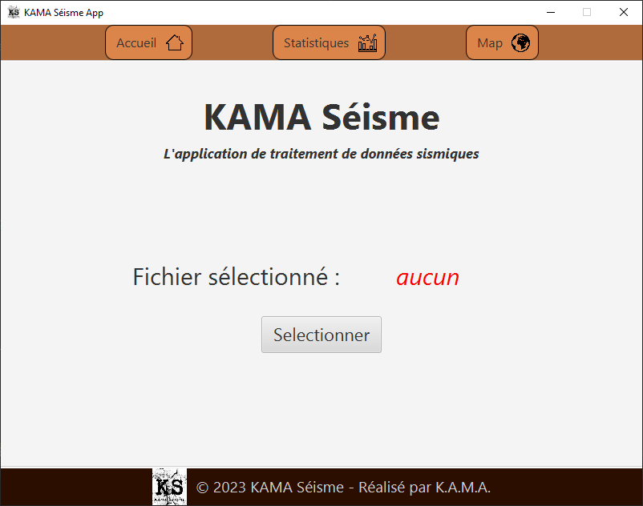
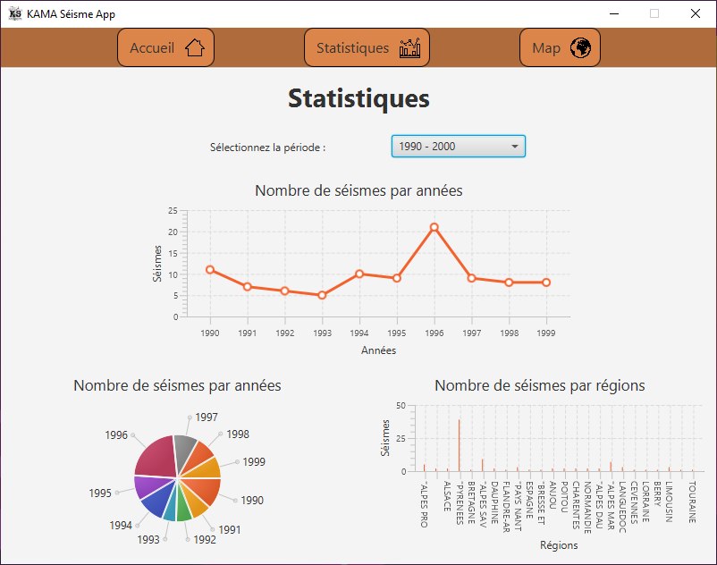
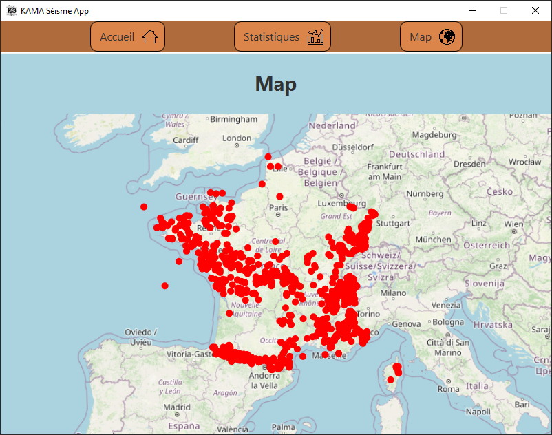

A. Bergeron
Accueil
Projets
Contacts
Projet KAMA Séisme
Présentation
Il s'agit d'une application développée en
Java
à l'aide de la bibliothèque
JavaFX
. Elle permet l'utilisation de fichiers au format
.csv
contenant des données liées à des séismes enregistrés sur le site
SisFrance.net
.
Projet réalisé en collaboration avec ALI Mdallah, BIHI Ayoub, et FERRIER Killian.
Accessible via GitHub
ici
.
Fonctionnalités
• Naviguer à travers 3 pages différentes depuis un menu
• Sélectionner un fichier
.csv
• Choisir une période à analyser
• Accéder à des statistiques
• Accéder à une carte intéractive
  